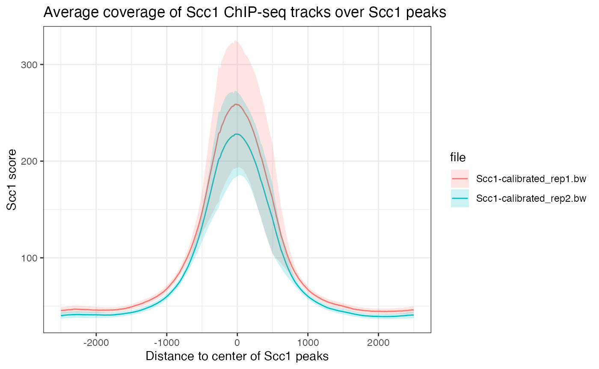

Quick start to using to aggregatR
library(GenomicRanges)
library(aggregatR)
library(ggplot2)
files <- data.frame(file = c(
system.file('extdata', 'Scc1-calibrated_rep1.bw', package = 'aggregatR'),
system.file('extdata', 'Scc1-calibrated_rep2.bw', package = 'aggregatR')
))
data(Scc1_peaks)
AC <- AggregatedCoverage(Scc1_peaks, files)
plot(AC) +
ggtitle('Average coverage of Scc1 ChIP-seq tracks over Scc1 peaks') +
labs(x = 'Distance to center of Scc1 peaks', y = 'Scc1 score', fill = 'file', col = 'file') +
theme_bw()
Citing aggregatR
We hope that aggregatR will be useful for your research. Please use the following information to cite the package and the overall approach. Thank you!
citation("aggregatR")
#>
#> To cite package 'aggregatR' in publications use:
#>
#> Serizay J (2022). _aggregatR: Standardized aggregate coverage plots_.
#> R package version 0.99.0, <https://github.com/js2264/aggregatR>.
#>
#> A BibTeX entry for LaTeX users is
#>
#> @Manual{,
#> title = {aggregatR: Standardized aggregate coverage plots},
#> author = {Jacques Serizay},
#> year = {2022},
#> note = {R package version 0.99.0},
#> url = {https://github.com/js2264/aggregatR},
#> }Reproducibility
The aggregatR package (Serizay, 2022) was made possible thanks to:
- R (R Core Team, 2022)
- BiocStyle (Oleś, 2022)
- knitr (Xie, 2022)
- RefManageR (McLean, 2017)
- rmarkdown (Allaire, Xie, McPherson, Luraschi, Ushey, Atkins, Wickham, Cheng, Chang, and Iannone, 2022)
- sessioninfo (Wickham, Chang, Flight, Müller, and Hester, 2021)
- testthat (Wickham, 2011)
- biocthis
The code for creating the vignette is:
## Create the vignette
library("rmarkdown")
system.time(render("aggregatR.Rmd", "BiocStyle::html_document"))
## Extract the R code
library("knitr")
knit("aggregatR.Rmd", tangle = TRUE)The date at which this vignette was compiled is:
#> [1] "2022-11-15 09:25:00 CET"Session information.
#> ─ Session info ───────────────────────────────────────────────────────────────────────────────────────────────────────
#> setting value
#> version R Under development (unstable) (2022-10-30 r83209)
#> os macOS Monterey 12.5.1
#> system aarch64, darwin20
#> ui X11
#> language en
#> collate en_GB.UTF-8
#> ctype en_GB.UTF-8
#> tz Europe/Paris
#> date 2022-11-15
#> pandoc 2.19.2 @ /Applications/RStudio.app/Contents/MacOS/quarto/bin/tools/ (via rmarkdown)
#>
#> ─ Packages ───────────────────────────────────────────────────────────────────────────────────────────────────────────
#> package * version date (UTC) lib source
#> aggregatR * 0.99.0 2022-11-15 [1] Bioconductor
#> assertthat 0.2.1 2019-03-21 [2] CRAN (R 4.3.0)
#> backports 1.4.1 2021-12-13 [2] CRAN (R 4.3.0)
#> bibtex 0.5.0 2022-09-25 [2] CRAN (R 4.3.0)
#> Biobase 2.59.0 2022-11-01 [2] Bioconductor
#> BiocGenerics * 0.45.0 2022-11-01 [2] Bioconductor
#> BiocIO 1.9.0 2022-11-01 [2] Bioconductor
#> BiocManager 1.30.19 2022-10-25 [3] CRAN (R 4.3.0)
#> BiocParallel 1.33.0 2022-11-01 [2] Bioconductor
#> BiocStyle * 2.27.0 2022-11-01 [2] Bioconductor
#> Biostrings 2.67.0 2022-11-01 [2] Bioconductor
#> bitops 1.0-7 2021-04-24 [2] CRAN (R 4.3.0)
#> bookdown 0.29 2022-09-12 [2] CRAN (R 4.3.0)
#> bslib 0.4.1 2022-11-02 [2] CRAN (R 4.3.0)
#> cachem 1.0.6 2021-08-19 [2] CRAN (R 4.3.0)
#> cli 3.4.1 2022-09-23 [2] CRAN (R 4.3.0)
#> codetools 0.2-18 2020-11-04 [3] CRAN (R 4.3.0)
#> colorspace 2.0-3 2022-02-21 [2] CRAN (R 4.3.0)
#> crayon 1.5.2 2022-09-29 [2] CRAN (R 4.3.0)
#> DBI 1.1.3 2022-06-18 [2] CRAN (R 4.3.0)
#> DelayedArray 0.25.0 2022-11-01 [2] Bioconductor
#> desc 1.4.2 2022-09-08 [2] CRAN (R 4.3.0)
#> digest 0.6.30 2022-10-18 [2] CRAN (R 4.3.0)
#> dplyr 1.0.10 2022-09-01 [2] CRAN (R 4.3.0)
#> ellipsis 0.3.2 2021-04-29 [2] CRAN (R 4.3.0)
#> evaluate 0.17 2022-10-07 [2] CRAN (R 4.3.0)
#> fansi 1.0.3 2022-03-24 [2] CRAN (R 4.3.0)
#> farver 2.1.1 2022-07-06 [2] CRAN (R 4.3.0)
#> fastmap 1.1.0 2021-01-25 [2] CRAN (R 4.3.0)
#> fs 1.5.2 2021-12-08 [2] CRAN (R 4.3.0)
#> generics 0.1.3 2022-07-05 [2] CRAN (R 4.3.0)
#> GenomeInfoDb * 1.35.2 2022-11-04 [2] Bioconductor
#> GenomeInfoDbData 1.2.9 2022-11-04 [2] Bioconductor
#> GenomicAlignments 1.35.0 2022-11-01 [2] Bioconductor
#> GenomicRanges * 1.50.0 2022-11-01 [2] Bioconductor
#> ggplot2 * 3.3.6 2022-05-03 [2] CRAN (R 4.3.0)
#> glue 1.6.2 2022-02-24 [2] CRAN (R 4.3.0)
#> gtable 0.3.1 2022-09-01 [2] CRAN (R 4.3.0)
#> highr 0.9 2021-04-16 [2] CRAN (R 4.3.0)
#> htmltools 0.5.3 2022-07-18 [2] CRAN (R 4.3.0)
#> httr 1.4.4 2022-08-17 [2] CRAN (R 4.3.0)
#> IRanges * 2.33.0 2022-11-01 [2] Bioconductor
#> jquerylib 0.1.4 2021-04-26 [2] CRAN (R 4.3.0)
#> jsonlite 1.8.3 2022-10-21 [2] CRAN (R 4.3.0)
#> knitr 1.40 2022-08-24 [2] CRAN (R 4.3.0)
#> labeling 0.4.2 2020-10-20 [2] CRAN (R 4.3.0)
#> lattice 0.20-45 2021-09-22 [3] CRAN (R 4.3.0)
#> lifecycle 1.0.3 2022-10-07 [2] CRAN (R 4.3.0)
#> lubridate 1.8.0 2021-10-07 [2] CRAN (R 4.3.0)
#> magrittr 2.0.3 2022-03-30 [2] CRAN (R 4.3.0)
#> Matrix 1.5-1 2022-09-13 [3] CRAN (R 4.3.0)
#> MatrixGenerics 1.11.0 2022-11-01 [2] Bioconductor
#> matrixStats 0.62.0 2022-04-19 [2] CRAN (R 4.3.0)
#> memoise 2.0.1 2021-11-26 [2] CRAN (R 4.3.0)
#> munsell 0.5.0 2018-06-12 [2] CRAN (R 4.3.0)
#> pillar 1.8.1 2022-08-19 [2] CRAN (R 4.3.0)
#> pkgconfig 2.0.3 2019-09-22 [2] CRAN (R 4.3.0)
#> pkgdown 2.0.6 2022-07-16 [2] CRAN (R 4.3.0)
#> plyr 1.8.7 2022-03-24 [2] CRAN (R 4.3.0)
#> purrr 0.3.5 2022-10-06 [2] CRAN (R 4.3.0)
#> R6 2.5.1 2021-08-19 [2] CRAN (R 4.3.0)
#> ragg 1.2.4 2022-10-24 [2] CRAN (R 4.3.0)
#> Rcpp 1.0.9 2022-07-08 [2] CRAN (R 4.3.0)
#> RCurl 1.98-1.9 2022-10-03 [2] CRAN (R 4.3.0)
#> RefManageR * 1.4.0 2022-09-30 [2] CRAN (R 4.3.0)
#> restfulr 0.0.15 2022-06-16 [2] CRAN (R 4.3.0)
#> rjson 0.2.21 2022-01-09 [2] CRAN (R 4.3.0)
#> rlang 1.0.6 2022-09-24 [2] CRAN (R 4.3.0)
#> rmarkdown 2.17 2022-10-07 [2] CRAN (R 4.3.0)
#> rprojroot 2.0.3 2022-04-02 [2] CRAN (R 4.3.0)
#> Rsamtools 2.15.0 2022-11-01 [2] Bioconductor
#> rstudioapi 0.14 2022-08-22 [2] CRAN (R 4.3.0)
#> rtracklayer 1.59.0 2022-11-01 [2] Bioconductor
#> S4Vectors * 0.37.0 2022-11-01 [2] Bioconductor
#> sass 0.4.2 2022-07-16 [2] CRAN (R 4.3.0)
#> scales 1.2.1 2022-08-20 [2] CRAN (R 4.3.0)
#> sessioninfo * 1.2.2 2021-12-06 [2] CRAN (R 4.3.0)
#> stringi 1.7.8 2022-07-11 [2] CRAN (R 4.3.0)
#> stringr 1.4.1 2022-08-20 [2] CRAN (R 4.3.0)
#> SummarizedExperiment 1.29.0 2022-11-01 [2] Bioconductor
#> systemfonts 1.0.4 2022-02-11 [2] CRAN (R 4.3.0)
#> textshaping 0.3.6 2021-10-13 [2] CRAN (R 4.3.0)
#> tibble 3.1.8 2022-07-22 [2] CRAN (R 4.3.0)
#> tidyr 1.2.1 2022-09-08 [2] CRAN (R 4.3.0)
#> tidyselect 1.2.0 2022-10-10 [2] CRAN (R 4.3.0)
#> utf8 1.2.2 2021-07-24 [2] CRAN (R 4.3.0)
#> vctrs 0.5.0 2022-10-22 [2] CRAN (R 4.3.0)
#> withr 2.5.0 2022-03-03 [2] CRAN (R 4.3.0)
#> xfun 0.34 2022-10-18 [2] CRAN (R 4.3.0)
#> XML 3.99-0.12 2022-10-28 [2] CRAN (R 4.3.0)
#> xml2 1.3.3 2021-11-30 [2] CRAN (R 4.3.0)
#> XVector 0.38.0 2022-11-01 [2] Bioconductor
#> yaml 2.3.6 2022-10-18 [2] CRAN (R 4.3.0)
#> zlibbioc 1.44.0 2022-11-01 [2] Bioconductor
#>
#> [1] /private/var/folders/dg/mbw146s905lgqgswn6w4ghk80000gn/T/RtmpSYTqIN/temp_libpath39045203654a
#> [2] /Users/jacques/Library/R/arm64/4.3/library
#> [3] /Library/Frameworks/R.framework/Versions/4.3-arm64/Resources/library
#>
#> ──────────────────────────────────────────────────────────────────────────────────────────────────────────────────────Bibliography
This vignette was generated using BiocStyle (Oleś, 2022) with knitr (Xie, 2022) and rmarkdown (Allaire, Xie, McPherson et al., 2022) running behind the scenes.
Citations made with RefManageR (McLean, 2017).
[1] J. Allaire, Y. Xie, J. McPherson, et al. rmarkdown: Dynamic Documents for R. R package version 2.17. 2022. URL: https://github.com/rstudio/rmarkdown.
[2] M. W. McLean. “RefManageR: Import and Manage BibTeX and BibLaTeX References in R”. In: The Journal of Open Source Software (2017). DOI: 10.21105/joss.00338.
[3] A. Oleś. BiocStyle: Standard styles for vignettes and other Bioconductor documents. R package version 2.27.0. 2022. URL: https://github.com/Bioconductor/BiocStyle.
[4] R Core Team. R: A Language and Environment for Statistical Computing. R Foundation for Statistical Computing. Vienna, Austria, 2022. URL: https://www.R-project.org/.
[5] J. Serizay. aggregatR: Standardized aggregate coverage plots. R package version 0.99.0. 2022. URL: https://github.com/js2264/aggregatR.
[6] H. Wickham. “testthat: Get Started with Testing”. In: The R Journal 3 (2011), pp. 5–10. URL: https://journal.r-project.org/archive/2011-1/RJournal_2011-1_Wickham.pdf.
[7] H. Wickham, W. Chang, R. Flight, et al. sessioninfo: R Session Information. R package version 1.2.2. 2021. URL: https://CRAN.R-project.org/package=sessioninfo.
[8] Y. Xie. knitr: A General-Purpose Package for Dynamic Report Generation in R. R package version 1.40. 2022. URL: https://yihui.org/knitr/.